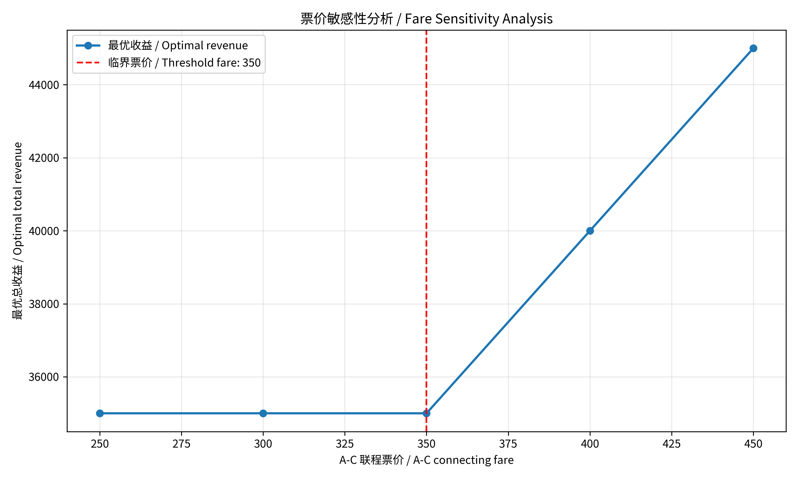
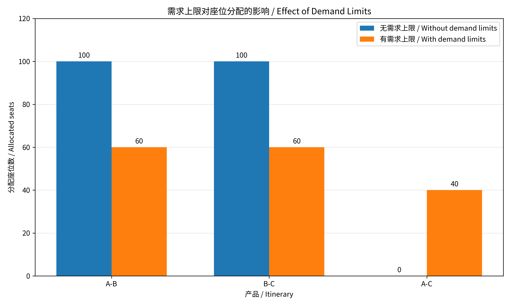

交互演示 / Explore the fare threshold
无需求上限，直飞票价固定为200和150。 / No demand limits; direct fares fixed at 200 and 150.
最优收益 / Optimal revenue: 35,000
A-B: 100 · B-C: 100 · A-C: 0
演示使用本模型的解析解；浏览器不运行Gurobi。 / This demonstration uses the analytical solution; Gurobi runs in the downloadable Python scripts.
1 实验目的 / Objective
使用 Python 和 Gurobi 最大化航空网络总收益，并分析联程票价与直飞需求上限对最优解的影响。
Use Python and Gurobi to maximize network revenue and examine the effects of the connecting fare and direct-itinerary demand limits.
2 数据与假设 / Data and assumptions
航段 Leg 1 为 A-B，Leg 2 为 B-C，每段容量均为 100。票价固定，每位旅客在所使用的每个航段占用一个座位。基础情景无需求上限，不考虑取消、退票或超售。
Leg 1 is A-B and Leg 2 is B-C; each has 100 seats. Fares are fixed, and each passenger uses one seat on every leg traveled. The baseline has no demand limits and excludes cancellations, refunds, and overbooking.
| 产品 / Itinerary | 航段 / Legs used | 票价 / Fare |
|---|---|---|
| A-B | Leg 1 | 200 |
| B-C | Leg 2 | 150 |
| A-C | Leg 1 + Leg 2 | 300 |
3 数学模型 / Mathematical formulation
令 x₁、x₂、x₃ 分别表示 A-B、B-C、A-C 产品分配的座位数。
Let x₁, x₂, and x₃ denote seat allocations to A-B, B-C, and A-C, respectively.
目标函数 / Objective
航段容量 / Leg capacities
变量取值 / Variable domains
4 实现方法 / Implementation
通过 gurobipy 创建并启动 Gurobi 环境，建立非负整数变量和容量约束，设置收益最大化目标，调用 optimize() 求解。仅在状态为最优时读取目标值和分配结果。完整代码见附录。
Create and start a Gurobi environment through gurobipy, define nonnegative integer variables and capacity constraints, set the revenue objective, and call optimize(). Read the objective and allocations only after optimality is confirmed. Complete scripts appear in the appendices.
运行要求：Python、gurobipy 和可用的 Gurobi 许可证。实际版本可在实验笔记本中通过下列命令记录。
Requirements: Python, gurobipy, and an available Gurobi license. Record actual versions in the experiment notebook using the commands below.
import sys
import gurobipy as gp
print(sys.version)
print(gp.gurobi.version())
5 基础实验结果 / Baseline results
| 产品 / Itinerary | 最优座位数 / Optimal seats |
|---|---|
| A-B | 100 |
| B-C | 100 |
| A-C | 0 |
两个航段均使用 100 个座位。出售两张直飞票的收益为 350，高于占用相同航段容量的一张联程票收益 300，因此最优方案全部分配给直飞产品。
Both legs use all 100 seats. Two direct tickets generate 350, exceeding the connecting fare of 300 for the same leg capacity consumption. Therefore, all capacity is allocated to direct itineraries.
6 票价敏感性分析 / Fare sensitivity analysis
保持直飞票价与容量不变，不设置需求上限，仅改变 A-C 票价。
Keep direct fares and capacities fixed, impose no demand limits, and vary only the A-C fare.
| A-C 票价 / Fare | 最优分配 / Allocation¹ | 收益 / Revenue |
|---|---|---|
| 250 | (100, 100, 0) | 35,000 |
| 300 | (100, 100, 0) | 35,000 |
| 350 | 多个最优解 / Multiple optima | 35,000 |
| 400 | (0, 0, 100) | 40,000 |
| 450 | (0, 0, 100) | 45,000 |
¹ 分配顺序 / Allocation order: (A-B, B-C, A-C).

图 1 票价与最优收益 / Figure 1 Fare and optimal revenue
350 为临界票价。在此价格下，对任意整数 0 ≤ t ≤ 100，(100−t, 100−t, t) 均为最优。实际求解返回 (100, 100, 0)。高于 350 时，全部容量用于联程产品。
The threshold fare is 350. At this fare, (100−t, 100−t, t) is optimal for any integer 0 ≤ t ≤ 100; the observed solver output was (100, 100, 0). Above 350, all capacity is assigned to A-C.
7 需求上限扩展 / Demand-limited extension
恢复原票价 200、150、300，增加 x₁ ≤ 60、x₂ ≤ 80；A-C 无额外需求上限。
Restore fares of 200, 150, and 300. Add x₁ ≤ 60 and x₂ ≤ 80, with no additional demand limit on A-C.

图 2 两种情景的座位分配 / Figure 2 Seat allocations by scenario
两个航段均用满。收益比基础情景下降约 5.71%。B-C 虽可售出最多 80 张，但最优仅售出 60 张，因为将部分 Leg 2 容量与剩余 Leg 1 容量组合用于联程更有利。联程旅客使用两个航段，产品旅客数之和不等于航段座位使用量。
Both legs are full. Revenue falls by approximately 5.71% relative to the baseline. Although B-C demand permits 80 tickets, only 60 are sold: combining some Leg 2 capacity with remaining Leg 1 capacity for A-C yields more revenue. Connecting passengers use two legs, so total itinerary passengers differ from total leg seats used.
8 结论与局限 / Conclusions and limitations
最优分配取决于票价、需求及共享容量占用。容量利用率相同也可能产生不同收益。本模型为确定性静态模型，未来可加入随机需求、多票价等级和动态订座。
Optimal allocations depend on fares, demand, and shared capacity consumption. Equal capacity utilization may yield different revenues. This deterministic static model could be extended to stochastic demand, multiple fare classes, and dynamic booking.
9 AI 辅助研究过程 / AI-assisted research process
研究定位：本实验是与课堂航空案例相关的简化数值实验，研究固定票价下的航段容量分配。未使用航空公司的真实数据，也未复现公开案例的全部模型。改变联程票价属于敏感性分析，并非动态定价模型。
Scope: this is a simplified numerical experiment related to the classroom airline case. It allocates leg capacity at fixed fares; it uses no airline data and does not reproduce an entire published model. Varying the connecting fare is sensitivity analysis, rather than dynamic pricing.
初始提示词 / Initial prompt
以下为初始请求的节选；问题数据为两个容量均为100的航段，以及票价为200、150、300的三个产品。
The following is an excerpt from the initial request. The supplied data specified two legs of 100 seats each and three itineraries with fares of 200, 150, and 300.
“Please write a complete Python script using gurobipy to solve this Network Revenue Management problem. The code should:
1. Initialize the Gurobi environment.
2. Define the decision variables (number of seats allocated to each itinerary).
3. Set the capacity constraints for the two flight legs.
4. Set the objective function to maximize total revenue.
5. Optimize the model and print the optimal revenue and seat allocation.”
实际工作流程 / Observed workflow
问题与数据输入 → AI生成数学模型和Gurobi代码 → 在笔记本运行 → 检查输出 → 扩展票价与需求情景 → 绘图和报告。运行中曾出现PuLP代码与指定工具不一致的问题，随后改用gurobipy；中文图表曾出现字体缺失，安装并加载中文字体后解决。
Problem and data → AI-generated formulation and Gurobi code → notebook execution → output checks → fare and demand scenarios → figures and report. A PuLP/tool mismatch was resolved by using gurobipy. Missing Chinese glyphs were resolved by installing and loading a Chinese font.
分工：AI协助生成代码、解释结果和整理报告；用户执行代码并返回结果。下节给出对输出的可复核验证。
Roles: AI assisted with code, explanations, and report preparation; the user executed the code and returned the outputs. The next section provides reproducible checks of those outputs.
10 Harris 框架与验证 / Harris framework and validation
以下依据2026年11月10日课堂AI纪要所列的八项组件，对本次工作进行回顾性对应；并不表示实现了完整的自动化框架。
The following retrospectively maps the work to the eight components listed in the AI-generated course notes dated 10 November 2026. It does not claim a complete automated framework implementation.
Rules 规则：使用gurobipy；非负整数座位；容量上限100。
Use gurobipy; nonnegative integer seats; capacity 100 per leg.
Action 流程：建模、运行、检查、扩展、报告。
Formulate, run, check, extend, and report.
Tools 工具：Python、Gurobi及图表工具。
Python, Gurobi, and plotting tools.
Context 上下文：提供航段、票价、容量和课堂背景。
Supply legs, fares, capacities, and course context.
Memory 记忆：对话和笔记本保留结果；未实现独立记忆系统。
Results retained in chat/notebook; no separate memory system.
Guardrails 护栏：编码容量和整数限制；读取结果前检查求解状态。
Encode capacity/integrality limits; check status before reading results.
Evaluation 评估：核算收益、检查可行性并比较情景。
Recalculate revenue, check feasibility, and compare scenarios.
Skills 技能：脚本可复用；未构建专门的代理技能模块。
Scripts are reusable; no dedicated agent skill module was built.
结果验证 / Result validation
基础模型：R = 200(x₁+x₃) + 150(x₂+x₃) − 50x₃ ≤ 35,000，且(100,100,0)达到上界。需求情景：R = 150(x₂+x₃) + 150(x₁+x₃) + 50x₁ ≤ 33,000，且(60,60,40)达到上界。因此两者分别为对应情景的全局最优解；35,000的分配违反新增需求限制。
Baseline: R = 200(x₁+x₃) + 150(x₂+x₃) − 50x₃ ≤ 35,000, attained by (100,100,0). With demand limits: R = 150(x₂+x₃) + 150(x₁+x₃) + 50x₁ ≤ 33,000, attained by (60,60,40). Both are globally optimal in their respective scenarios; the 35,000 allocation violates the added demand limits.
附录 A 基础模型 / Appendix A Baseline model
代码 / Python code
import gurobipy as gp
from gurobipy import GRB
def main():
try:
# 初始化环境 / Initialize the environment
with gp.Env(empty=True) as env:
env.setParam("OutputFlag", 0)
env.start()
with gp.Model("Network_Revenue", env=env) as model:
# 非负整数座位 / Nonnegative integer seats
x = model.addVars(
[1, 2, 3], lb=0, vtype=GRB.INTEGER, name="seats"
)
# 航段容量 / Leg capacities
model.addConstr(x[1] + x[3] <= 100, "Leg_1")
model.addConstr(x[2] + x[3] <= 100, "Leg_2")
# 最大化收益 / Maximize revenue
model.setObjective(
200*x[1] + 150*x[2] + 300*x[3], GRB.MAXIMIZE
)
model.optimize()
if model.Status == GRB.OPTIMAL:
print(f"Optimal revenue: {model.ObjVal:,.2f}")
for j in [1, 2, 3]:
print(f"Product {j}: {round(x[j].X)} seats")
else:
print(f"No optimum; status: {model.Status}")
except gp.GurobiError as error:
print(f"Gurobi error {error.errno}: {error}")
if __name__ == "__main__":
main()附录 B 票价实验 / Appendix B Fare experiment
代码 / Python code
import gurobipy as gp
from gurobipy import GRB
# 无需求上限 / No demand limits
with gp.Env(empty=True) as env:
env.setParam("OutputFlag", 0)
env.start()
print("A-C fare | A-B | B-C | A-C | Revenue")
for fare in [250, 300, 350, 400, 450]:
with gp.Model("Fare_Sensitivity", env=env) as model:
x = model.addVars(
[1, 2, 3], lb=0, vtype=GRB.INTEGER, name="seats"
)
# 容量约束 / Capacity constraints
model.addConstr(x[1] + x[3] <= 100)
model.addConstr(x[2] + x[3] <= 100)
# 仅改变联程票价 / Vary only the connecting fare
model.setObjective(
200*x[1] + 150*x[2] + fare*x[3], GRB.MAXIMIZE
)
model.optimize()
if model.Status == GRB.OPTIMAL:
a, b, c = (round(x[j].X) for j in [1, 2, 3])
print(f"{fare} | {a} | {b} | {c} | {model.ObjVal:,.2f}")
else:
print(f"Fare {fare}: status {model.Status}")
# 350 时存在多个最优解 / Multiple optimal solutions at fare 350附录 C 需求实验 / Appendix C Demand experiment
代码 / Python code
import gurobipy as gp
from gurobipy import GRB
with gp.Env(empty=True) as env:
env.setParam("OutputFlag", 0)
env.start()
with gp.Model("Demand_Limits", env=env) as model:
# 整数座位分配 / Integer seat allocations
x = model.addVars(
[1, 2, 3], lb=0, vtype=GRB.INTEGER, name="seats"
)
# 航段容量 / Leg capacities
model.addConstr(x[1] + x[3] <= 100, "Leg_1")
model.addConstr(x[2] + x[3] <= 100, "Leg_2")
# 新增需求上限 / Additional demand limits
model.addConstr(x[1] <= 60, "Demand_AB")
model.addConstr(x[2] <= 80, "Demand_BC")
model.setObjective(
200*x[1] + 150*x[2] + 300*x[3], GRB.MAXIMIZE
)
model.optimize()
if model.Status == GRB.OPTIMAL:
a, b, c = (round(x[j].X) for j in [1, 2, 3])
print(f"Optimal revenue: {model.ObjVal:,.2f}")
print(f"A-B: {a}; B-C: {b}; A-C: {c}")
print(f"Leg 1: {a+c}/100; Leg 2: {b+c}/100")
else:
print(f"No optimum; status: {model.Status}")文件与复现 / Downloads and reproduction
需要Python、gurobipy及可用许可证。 / Python, gurobipy, and an available Gurobi license are required.
python -m pip install -r requirements.txt
python scripts/baseline.py
python scripts/fare_experiment.py
python scripts/demand_experiment.py- 基础模型 / Baseline model
- 票价实验 / Fare experiment
- 需求实验 / Demand experiment
- 依赖 / Requirements
- Word报告 / Word report
本实验使用题设数据，不涉及真实航空公司数据。实际Python和Gurobi版本应记录在运行笔记本中。 / This experiment uses specified illustrative data, not airline data. Actual Python and Gurobi versions should be recorded in the execution notebook.